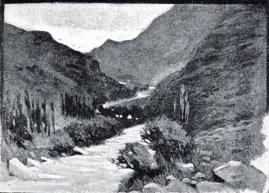

For some days after the repulse of Mithridates, the Hellenes were allowed to continue their march unmolested, but soon the Persians were again seen coming up behind them. Tissaphernes was now pursuing them with all the forces under his command, determined that they should not much longer escape his vengeance.
Keeping the main body of his army in the background, he brought to the front his numerous companies of light infantry, and commanded them to make use of their slings and bows. But the Hellenes, unawed by the overpowering numbers of the enemy, quickly brought forward their little band of Rhodians, whose leaden bullets carried farther than the heavy shot of the Persian slingers, and before the enemy was near enough to do them any harm, they had opened fire upon their close-packed ranks where every shot was certain to tell. The archers too discharged their arrows with equal effect, and so deadly was the assault, that Tissaphernes was obliged to withdraw his men out of range, and for the rest of that day, contented himself with following the Hellenes at a safe distance.
Before retiring from the ground where the skirmish had taken place, the Hellenes were careful to collect all the bows and arrows that had belonged to the dead Persians. These bows, which were much stronger than their own, were likely to be of great service to them, and in the evening, when they reached the villages in which they were to spend the night, they took great pains to practise using them with effect. They were so fortunate moreover as to find in these same villages a store of excellent bow-strings, and a quantity of lead, which they at once set to work to make into bullets.
After resting for one whole day, they continued their march, and now the road lay through a flat plain. Tissaphernes followed at a distance, always on the lookout for any opportunity of attacking them at a disadvantage, and so overwhelming was his superiority in point of numbers that he was often able to inflict considerable loss, even upon the brave Hellenes.
Sometimes for instance the road would narrow considerably, or a bridge would have to be crossed, and then it was found that the plan of marching in the form of a square had many drawbacks for a retreating army with the enemy in pursuit. Confusion was sure to arise, both in breaking up the square on arriving at the narrow part of the road, and in re-forming it on coming out again into the open country, and by this confusion Tissaphernes did not fail to profit.
The generals agreed that some new plan must be devised to meet the difficulty, and they decided to form six small companies, each consisting of a hundred men, and subdivided into half and quarter companies, each with its own officer. When the square had to be compressed for passing over a bridge or narrow road, these companies fell out of their places in the wings, and wheeled round to the back of the rear, returning again to the wings when the square widened out again. By this means disorder was prevented, and for the next four days the Hellenes continued their way with very little loss.
On the fifth day they came to the end of the flat country. They had now to cross a range of hills, and at this they rejoiced, thinking that the hilly ground would be disadvantageous for the Persian cavalry. But this day was destined to be the most disastrous of any they had yet known.
Seeing in the distance a palace with several villages clustering round it, they decided to make for it. The road lay over hilly ground, and they had already climbed the first hill when they received an unexpected check. As they descended the farther side, the enemy appeared upon the height they had just left, and discharged a volley of stones and arrows upon the light-armed infantry, killing and wounding many of them.

THE HILL COUNTRY EAST OF THE TIGRIS.
To this the Hellenes replied by sending a detachment of hoplites to march back up the hill, and dislodge the Persians. Their. heavy armour protected them to some extent, but made it impossible for them to advance rapidly, and the nimble Persians quickly withdrew beyond their, reach, returning however as soon as the hoplites turned back to rejoin their comrades, and discharging their shots and arrows as before.
At the second hill, the same thing happened again, and now the Persian cavalry were also brought into play, and directed to chase the Hellenes at full speed down the steep descent. This they did, but only when they had been driven to their work with whips. Meanwhile the hail of stones and arrows continued, and made such havoc in the ranks of the light-armed troops who wore neither helmet nor coat of mail, that it became urgently necessary to find some means of diverting the attention of the enemy.
Calling a short halt, the generals rapidly took counsel together, and formed a plan by which the light infantry could be placed beyond the reach of danger, and at the same time give assistance to their comrades.
Parallel with the range of hills over which the Hellenes were making their way, was a range of mountains, from whence the road along the hills could be overlooked. To these mountains the light-armed troops were despatched, with instructions to keep pace with their comrades on the lower level, and rain down shots and arrows upon the enemy whenever they attempted to hinder them in their march. As soon as the Persians perceived this device, they gave up the pursuit. The disadvantage was now on their side, and they were afraid of being cut off from the main body of their army.
So for the rest of that day the Hellenes continued their way in peace, the light infantry on the mountains, the hoplites on the lower hills. At last they reached the villages which they had perceived in the distance, and now the first thing to be done was to see to the sick and wounded, of whom there were a great many.
They were carefully tended by the eight surgeons who accompanied the Hellene force, and for three days the army rested quietly in the villages. This was chiefly on account of the sick, but partly also because they found there great stores of wheat, barley, and wine, of which they took possession without paying for them, because they were now at war, and in the enemy's country.